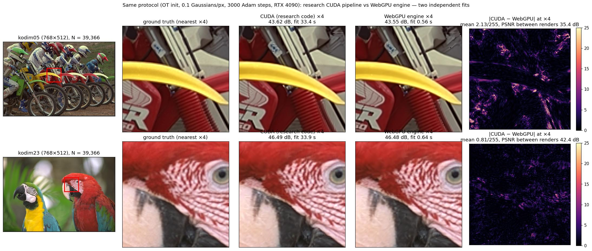
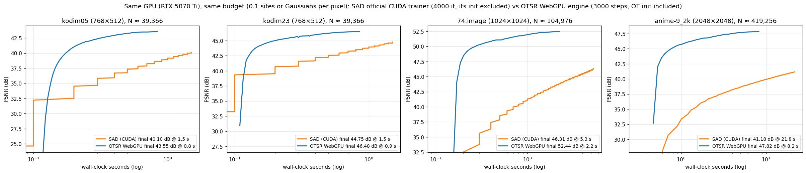

■ Optimal-transport Gaussian super-resolution
How OTSR worksOTSR 的原理、演示與引擎
OTSR represents a picture as a few hundred thousand stretched Gaussians, placed by optimal transport and refined by gradient descent, and renders that continuous model at any resolution. This page explains the idea the way a magazine would, with nine live demonstrations that compute what they show, the numbers the research measured, what the app does on your GPU and how the engine does it in seconds — and a reading list for the curious.
00In short摘要
Most upscalers do one of two things. The classical ones — bicubic, Lanczos — treat a picture as samples of a smooth signal and fill in between them: instant, honest, and blurry. The learned ones have seen millions of images and guess what the missing pixels probably looked like: sharp, sometimes wrong, and heavy. OTSR takes a third road. It turns the picture into a few hundred thousand small, stretched Gaussian blobs — a vector representation — and asks each blob to sit exactly where the picture needs it. A continuous model like that has no resolution of its own: render it at 2×, 4× or 16× and the strokes stay strokes. Two ideas make it work: placement by optimal transport, a 240-year-old question about moving earth, answered here on a GPU in forty milliseconds, and a renderer that blends the blobs so that they never fight each other. Everything runs in your browser, on your own GPU; nothing leaves your machine.
放大一張圖，通常只有兩條路。古典的插值（bicubic、Lanczos）把圖當成平滑訊號的採樣，在樣本之間補值：即時、誠實、但模糊。學習式的超解析度看過上百萬張圖，猜測缺失的像素原本長什麼樣：銳利、偶爾猜錯、而且很重。OTSR 走第三條路：把圖變成幾十萬個小而拉長的高斯斑點——一種向量表示——並讓每個斑點坐在圖像真正需要它的地方。這樣的連續模型沒有自己的解析度：以 2×、4× 或 16× 渲染，筆畫仍然是筆畫。讓它成立的兩個想法：用最優傳輸決定位置（一個關於搬運土方的兩百多年老問題，在 GPU 上四十毫秒內算出答案），以及一個讓斑點彼此不打架的渲染器。一切都在瀏覽器裡、在你自己的 GPU 上完成，資料不離開你的機器。
The method comes from our workshop paper on optimal-transport Gaussian lattices (under review); this page tells it the way a magazine would, with the paper's results quoted in prose and its sources in the reading list at the end. Nine live demonstrations (Demo A–I) compute what they show, in the page, on your CPU — press Play, drag the sliders, or drag the lattice of Demo I. A copper In the app tag marks what the OTSR app does on your GPU right now; a plain Paper tag marks what the paper shows but the app does not do yet.
01The problem: pixels, vectors and the pictures in between問題：像素、向量，與夾在中間的圖In the app
Look closely at an animation frame or an illustration. Most of it is nearly flat colour. The rest is thin, high-contrast line work: an eyelid, a strand of hair, the edge of a sleeve. That mixture is what makes these pictures hard to upscale. Interpolation spreads every edge over the new pixels and the strokes go soft. A neural upscaler sharpens them, but it also invents: texture that was never there, a line that bends the wrong way. Neither treats the picture as what it secretly is — a drawing that was rasterised once.
Gaussian images undo the rasterisation. Following the idea of 3D Gaussian splatting [1], a 2-D image can be represented by a fixed budget of Gaussians in continuous coordinates — GaussianImage [2] and Image-GS [3] showed that a few hundred thousand of them reproduce a picture at better than 40 dB and render at over a thousand frames per second. Because the Gaussians live in continuous coordinates, a fit to a small image can be rendered on any larger raster. That is the door to super-resolution without training data; how well it works depends on one question that sounds trivial and is not: where should the Gaussians go?
Existing methods place them in one of three ways. At random, as GaussianImage does. By sampling an importance map built from the image gradients, as Image-GS does. Or by a trained network that predicts the layout, as Instant-GI [5] and Fast-2DGS [8] do — fast, but tied to the training data. Sampling, learned or not, follows the intended density only on average: samples clump in some places and leave holes in others, and the clumps and holes do not go away when you add more samples. A deterministic warp of a grid, the Knothe–Rosenblatt rearrangement, reproduces the density exactly but shears the cells into needles. What we wanted was a layout with the regularity of a grid and the adaptivity of sampling.
The rest of the page follows the pipeline below, stage by stage. Everything in it runs on the GPU of the machine that opened the page; the figures under the boxes are measured times for a 2048 × 2048 image on an RTX 4090. A discrete laptop GPU takes 5–20× longer, an integrated one a minute or two for a 2-megapixel image, and a recent phone fits the bundled 1024 × 815 sample in a few seconds.
The animation during a fit is the process, not an illustration of it. The mesh that settles on the picture is the real lattice after every stage of the transport solver (§ 05); the coloured blobs that then grow are the real Gaussians, drawn by the engine from the parameters the optimiser is changing, each in a random colour times its own brightness; the scan line at the end only hands the true colours back.
02A picture made of Gaussians由高斯構成的圖In the app
Each Gaussian is nine numbers: a centre, two widths, a rotation, a colour and a weight. In the engine they are stored exactly so:
| parameter | size | meaning |
|---|---|---|
uv | 2 | the centre in continuous image coordinates, (x, y) ∈ [0, 1]² |
log_s | 2 | log standard deviations along the two principal axes, in units of the long side L = max(W, H) |
rot | 1 | the rotation of the principal axes, in radians |
color | 3 | RGB |
log_w | 1 | log weight |
At a point x a Gaussian with centre m and covariance Σ contributes a bell alpha(x) = exp(−½ (x − m)ᵀ Σ⁻¹ (x − m)), and the picture is the weight-normalised blend of all of them — a weighted average of the colours that cover the pixel, in the spirit of EWA splatting [41]:
out(x) = Σᵢ wᵢ alphaᵢ(x) cᵢ / ( Σᵢ wᵢ alphaᵢ(x) + ε ), wᵢ = exp(log_wᵢ), ε = 1e-4
Three things follow, and all three matter for a product.
- There is no order. The blend is a sum: no depth, no sorting, no "which Gaussian is in front". Every Gaussian is independent of the others, which is what makes the gradients cheap and the render deterministic.
- There is no native resolution. Everything is in continuous coordinates. The same Gaussians describe the picture at any output size; rendering at a scale S just evaluates the blend on a grid S times finer. Zooming in the app re-renders the model at the exact zoom, every frame.
- Edges are as small as the fit allows. The model is fitted at the native resolution, so a Gaussian never needs to be smaller than about 0.2 px. At 8× such a Gaussian is a soft blob 1.6 output pixels wide — the one thing the plain render cannot avoid, and what § 09 is about.
In the engine the support of every Gaussian is cut at its 4σ ellipse with a shift that keeps the function continuous, alpha = max(exp(−q) − exp(−8), 0), for fitting and display alike. The research rasteriser culls per 16 × 16-pixel tile at a radius that depends on the output raster; for a product whose premise is resolution independence, that is the one thing we changed (§ 14).
03Where should the Gaussians go?高斯該放在哪裡Paper
Start with a density ρ that says how densely Gaussians should be placed: a little everywhere, a lot along the strokes. OTSR uses the Image-GS importance density [3] — the luma gradient magnitude, mixed with a uniform share so that flat regions are never emptied — but any map would do, including a learned one.
Now think of each Gaussian as responsible for the pixels closer to its centre than to any other centre: its Voronoi cell [38]. A fair layout gives every Gaussian the same share of ρ, one K-th of the total. This is the equidistribution principle of adaptive meshing [12]: the budget per unit of difficulty is constant, no Gaussian is spent on a region its neighbours already cover, and no region is left to too few.
That law [27] is the catch in the sampling approach. Draw K points independently from ρ and locally they form a Poisson process; the masses of their cells are then approximately Gamma-distributed with shape 3.57, and the spread of that distribution does not shrink as K grows. A fixed fraction of the Gaussians is nearly redundant (2.6 % carry less than a quarter of their share) and a fixed fraction of the picture is under-served (11.9 % of the mass lies in cells carrying more than twice their share). On the paper's 33 anime images, sampling gives a coefficient of variation of 0.60 at 4,096 Gaussians and 0.59 at 16,384, with 16.6 % and 15.7 % of the mass under-served. More Gaussians make the cells smaller, not more even.
Two dimensions are the same story, computed for real below: a small entropic transport (§ 05) moves a 12 × 8 lattice onto a density with a ridge and a blob, and random samples of the same density sit next to it. Each point's cell is coloured by the share it carries. The transported lattice is not perfect — the paper measures a coefficient of variation of 0.32 and 0.30 on real images, half that of sampling, with 0.7 % and 1.2 % of the mass under-served instead of 16.6 % and 15.7 % — but the difference is visible at a glance.
There is an iterative way to even the shares out: Lloyd's relaxation towards a centroidal Voronoi tessellation [36], [37] moves each point to the centroid of its cell, over and over. Thirty iterations from the samples give cells as even as the lattice's (a coefficient of variation of 0.28) — at 5 to 6 seconds per layout on the CPU against 0.2 seconds for the transport, and with no lattice to speak of: the points sit in compact, round cells with no shared structure. With positions frozen, that layout ends 1.34 and 0.54 dB below the transported lattice at 4,096 and 16,384 Gaussians. Even shares are necessary; they are not all that matters.
04Moving a lattice with optimal transport用最優傳輸搬動格點In the app
In 1781 Gaspard Monge asked how to move a pile of earth into a hole of the same volume with the least total effort [30]. Kantorovich made the question tractable in 1942 by allowing the earth to be split and merged [31]; Brenier showed in 1991 that, for the squared-distance cost, the cheapest way to move one density onto another is a single map, and that this map is the gradient of a convex function [10]. Two textbooks tell the whole story [32], [33]. OTSR uses that map to place Gaussians.
Take a uniform lattice of gy × gx ≈ K points over the picture (the aspect ratio of the lattice follows the picture's). Look for the map T that pushes the uniform density onto ρ and moves the lattice the least, and put Gaussian i at T(ξi). By Brenier's theorem T = ∇ψ for a convex potential ψ, which solves the Monge–Ampère equation det ∇²ψ = 1 / ρ(∇ψ) — the same equation that moving-mesh methods in numerical analysis use to adapt a mesh to a solution with sharp features [12], [13], [25]. The layout inherits their properties:
- Equal shares. Every lattice cell has the same area, and T carries it onto a region of ρ-mass exactly 1/K. The Monge–Ampère equation also fixes the size of the cells: a cell's area after the map is inversely proportional to the density it lands in.
- No shear, no rotation. The Jacobian J = ∇²ψ is symmetric and positive definite, so each cell is stretched along two orthogonal axes and never sheared. (The Knothe–Rosenblatt map, by contrast, has a triangular Jacobian and shears the cells into needles — an aspect ratio of 78 at the 95th percentile on the paper's images, against 8.7 for the transport.)
- No folding, at every stage. T is a diffeomorphism: neighbours stay neighbours and no two cells overlap. The same holds on the way there — the straight path (1 − t) ξ + t T(ξ) is the gradient of the convex function (1 − t)|ξ|²/2 + tψ for every t in [0, 1], McCann's displacement interpolation [26] — so the lattice unfolds onto the picture without two cells ever crossing. That is the animation the app plays, and the demonstration below.
- Least motion. Among all maps that satisfy the first property, T moves the lattice the least.
Properties 1 and 4 are the definition and Brenier's theorem; 2 and 3 follow from Caffarelli's regularity theory [18]. A discretised solver satisfies them approximately: with the paper's float32 solver 0.03 % of the cells fold at 4,096 Gaussians — about one per image — and none at 50,000.
Shapes and colours
Each Gaussian inherits the deformation of its cell: Σ = (σ₀ h)² J Jᵀ with the lattice spacing h and σ₀ = 0.6. Across a stroke the density is high and narrow, so the map compresses cells across it and stretches them along it, and the initial Gaussians are elongated and aligned with the line work before any optimisation. For a linear feature this geometry can be derived exactly [25]. Because J is symmetric, its eigenvectors give each Gaussian's axes directly; the colour is sampled from the picture at the centre, and every weight starts at one. On a 2048² illustration with 160,000 Gaussians the lattice hugs eyelids and hair strands.
The app computes exactly this layout for every image you open: the importance density with a uniform share λ that depends on the lattice spacing (0.3 for dense lattices, down to 0.1 for sparse ones), the lattice with gx = round(√(K W / H)) columns, the map and its finite-difference Jacobian, the covariance (0.6 h / L)² J Jᵀ with scales clamped to at least 0.35 px, the bilinearly sampled colour, weight one. The budget K is the preset: one Gaussian per 20, 10 or 7 pixels for Fast, Standard and Best.
05Solving it in forty milliseconds四十毫秒內解出In the app
The exact transport problem is expensive. The trick that makes it cheap is entropic regularisation [14], [23]: smooth the problem a little, and its solution becomes a scaling of a fixed kernel that two alternating normalisations — Sinkhorn's iterations, known since 1967 [34] — find in a few hundred passes. Shrinking the smoothing step by step, ε-scaling [35], keeps the iterations stable and brings the answer close to the exact map; working in the log domain keeps float32 from overflowing.
OTSR discretises the uniform density and ρ on a coarse grid with n = clip(L/4, 128, 256) cells along the long side — 256 for 1–2K images, where 128 cells would be 8–16 px wide and blur thin strokes. The schedule starts ε at the size of the domain squared and shrinks it by 0.6 per stage, six iterations per stage and thirty at the final ε = (1.5 cells)²: about 150 iterations in all. The quadratic cost on a grid is separable, so every iteration is two one-dimensional log-sum-exp passes [15] instead of a dense matrix product. The map itself is the barycentric projection T(x) = E[y | x] of the transport plan, interpolated to the lattice points together with its finite-difference Jacobian.
The solver runs in float32 on the GPU: two tiny kernels, the two one-dimensional log-sum-exps, dispatched a few hundred times inside a single submit — about 40 milliseconds for a 256 × 256 transport grid, independent of the number of Gaussians. The map differs from a float64 solution by up to 1.6 × 10⁻³ box units (0.3 px on a 2K image, with an rms ten times smaller), the same error as the paper's float32 solver, which was measured to change the fitted PSNR by less than 0.05 dB. The fit animation plays the lattice after every stage of this schedule, in the order the solver produced them.
The 256-cell cap is set by float32: at 512 cells the solver becomes unreliable, and on 2048² images the 8-px cells are coarser than the finest strokes — which is why, in one of the paper's eleven native-resolution groups, the lattice ends 0.24 dB behind per-pixel sampling. A multiscale or semi-discrete solver [39], [40] would lift the cap; it is on the list.
06A second look: the error-driven re-layout第二次傳輸：誤差驅動的重排Paper
The importance density only predicts where the fit will have trouble. After a short fit of 300 steps, the residual — the blurred squared error between the render and the picture — shows where Gaussians are actually missing. The paper updates the density to ρ₂ ∝ ρ · (E / Ē + 0.1)½, more where error remains and less where the fit is already good, solves a second transport, re-initialises the Gaussians on the new lattice and fits for the remaining steps. In moving-mesh terms this is one equidistribution step [12].
One thing does not work: moving the fitted Gaussians along the composition of the two maps. The global map shifts every cell, and the fitted colours no longer match their new positions. So the attributes restart, and the re-layout costs the 300 steps already spent. It pays them back: at the same number of steps it adds 0.19 to 0.29 dB on anime images, most of it on line art, and it is the most effective single component at dense budgets, where a single lattice falls behind per-pixel sampling and one re-layout puts it ahead again by 0.3 to 1.2 dB.
The app does one layout and one fit. The re-layout is a candidate for a later version: it costs one more solve — about 40 ms here — and the 300 steps already spent.
07Blending, and why the lattice needs a renderer of its own混合方式：格點為何需要自己的渲染器In the app
The lattice puts many small, overlapping Gaussians along each stroke, elongated and rotated from the start. Two common renderer choices handle this badly, and finding that out cost the paper a detour.
The first is additive blending, as in GaussianImage [2]: the colours of overlapping Gaussians simply add up, clamped at white. To reproduce the inside of a stroke, the Gaussians that cover it must then cancel each other — their colours become coupled, and the optimiser has a hard time. With additive blending the lattice keeps its lead over random positions but falls behind sampled layouts at dense budgets: 0.19 dB ahead at 10,000 Gaussians, 0.60 dB behind at 50,000. Weight-normalised blending makes every pixel a convex combination of the colours that cover it; neighbours no longer work against each other, the gain of the layout comes through, and the blend is 0.5 to 0.8 dB better than the top-10 normalisation of Image-GS for every layout.
The second is the gradients of the shapes. The tile rasteriser shared by Image-GS and Fast-2DGS returns wrong gradients for scale and rotation in its projection. Fitting with them costs a random start 2.0 dB and the lattice 3.8 dB at 10,000 Gaussians — the lattice's Gaussians start anisotropic and need correct shape gradients to be refined. With one learning rate for everything instead of per-parameter rates the loss is larger still (5.3 and 4.7 dB for the lattice). Both fixes help every layout; the lattice needs them most.
The WebGPU engine of the app is this renderer, written from scratch: the weight-normalised blend in the forward pass, and the gradients of all nine parameters derived by hand and reproduced by the kernels to about 10⁻⁶ relative (§ 13, § 14) — without a framework. It is what lets the app fit 419,000 Gaussians in about five seconds on an RTX 4090.
08The fit擬合In the app
From the layout, every parameter of every Gaussian is optimised against the pixels with Adam [19] on the mean squared error — no densification, no pruning, no network. The learning rates differ by parameter type, each multiplied by a cosine schedule from 1 to 0.05 over the run, and the parameters are clamped after every step so that no Gaussian leaves the picture, vanishes or explodes: uv ∈ [−0.02, 1.02], log_s ∈ [log(0.2 / L), log 0.5], log_w ∈ [−8, 8].
| uv | log_s | rot | color | log_w |
|---|---|---|---|---|
| 0.25 / L — a quarter pixel | 0.02 | 0.02 | 0.01 | 0.02 |
The gradients are exact, derived by hand. With uᵢ = wᵢ alphaᵢ, D = Σ uᵢ + ε and G = ∂loss/∂out:
∂loss/∂cᵢ = G uᵢ / D qᵢ = Σ_ch G_ch (cᵢ,ch − out_ch) / D (= ∂loss/∂uᵢ) ∂loss/∂wᵢ = Σₓ qᵢ alphaᵢ, ∂loss/∂q = −qᵢ wᵢ exp(−q) (inside the support) ∂q/∂m = (a dx + b dy, b dx + d dy), ∂q/∂(a, b, d) = (dx²/2, dx dy, dy²/2)
then the chain rule to the scales and the angle. Writing them out is what lets one GPU kernel compute every gradient of every Gaussian in one pass. Quality rises fast and then slowly: on the 2048 × 2048 reference image the fit reaches 51.8 dB after 500 steps, 52.5 dB after 1500 and 52.75 dB after 3000. The presets trade the budget and the step count against time:
| preset | Gaussians | steps | for |
|---|---|---|---|
| Fast | 1 per 20 px | 1500 | a quick look, laptops and phones |
| Standard | 1 per 10 px | 3000 | the default |
| Best | 1 per 7 px | 4000 | fine textures |
PSNR, the figure the app reports, is measured between the model rendered at 1× and the source: it says how faithfully the vector model reproduces the picture it was fitted to. A model that reproduces its source at 50 dB has captured every edge it will later magnify. An L1 variant of the loss (Charbonnier) is available in research mode, together with the PSNR curve of every fit.
09Any size: super-resolution without training任意尺寸：免訓練的超解析度Paper In the app
Here is the catch of the resolution-free model, and the paper's answer to it. Fit a small picture with Gaussians and render it four times larger, and you get — interpolation. The fit treated every input pixel as a point sample of the picture, so the Gaussians faithfully reproduce the blur the input already had, and the large render is no sharper than Lanczos [43] or bicubic [42]. The paper measures it: the fit alone lands within −1.6 and +0.1 dB of Lanczos on anime images.
The paper's remedy is a short second fit with a different question. Instead of "match the input pixels", ask "match the input once your large render is degraded the way the input was" — rendered at S×, downsampled with the standard antialiased bicubic filter, compared with the input. Five hundred steps of that, on the low-resolution picture alone, let the Gaussians become sharper than the input wherever a few anisotropic Gaussians explain the data. The small budget is the prior: the refinement cannot add structure the Gaussians cannot express, and stopping early keeps it from fitting the null space of the downsampling.
At the budget of the other Gaussian representations, 0.038 per input pixel, it beats GaussianImage, Image-GS, SAD and Fast-2DGS on every image and at every factor, by 1.0 to 2.7 dB on anime and 0.8 to 2.0 dB on posters, and Bézier Splatting [28] where that was run. Against Lanczos at that budget it gains most where there are strokes to sharpen and enough input to constrain them — +2.1 dB at 4× and +1.1 dB at 8× on anime — and falls slightly behind at 2×, where the input still holds fine texture, and at 16×, where a 128² input gets 625 Gaussians. Most of the gain comes from the refinement (+0.45 to +2.07 dB on every image); the layout matters less here than for fitting, but a random start still ends 0.24 to 0.85 dB lower. Fits and refinements take 20 to 30 seconds per image on an RTX 4090, against milliseconds for interpolation.
Two details keep the large render consistent with the fit, and they are the kind of thing that costs a day when missed: pixels must be sampled at their centres, so that input pixel j and output pixels Sj … Sj + S − 1 cover the same interval, and the rasteriser must not cut the Gaussians' tails earlier at S× than it did while fitting. Rasterisers that sample pixel j at x = j shift the large render by (S − 1)/2 pixels; the paper shifts them back for every baseline. The engine of the app sidesteps both: the exact 4σ support of § 02 is the same function at every scale.
What the app does at magnification
In the app The app renders the fitted Gaussians at any scale, tile by tile. It does not run the refinement yet; instead, at magnification, it sharpens the render with a distance-field edge pass — the trick that keeps vector fonts crisp when they are magnified from a signed-distance field [29], generalised from a binary coverage mask to colour images:
- In a window of radius r = round(0.75 S) around each output pixel, find the darkest and the brightest pixels by luma and take their actual colours D and B.
- t = (Y − Y_min) / (Y_max − Y_min) is a locally normalised field whose 0.5 level is the edge.
- Re-threshold it with a smoothstep whose half-width w = ½ · edge_px · |∇t| is the change of t over edge_px output pixels — so the transition is edge_px pixels wide at every magnification: alpha = smoothstep(½ − w, ½ + w, t), sharp = D + (B − D) alpha. All three channels share one curve, so no colour fringes appear.
- Blend the result in only where the local contrast is real: gate = smoothstep(0.08, 0.2, Y_max − Y_min); out = img + gate · (sharp − img). Flat regions and smooth gradients are untouched.
The pass costs about a millisecond per megapixel and is applied to every export and, from 1.5× upwards, to the viewer. It needs a clean, continuous input, which the Gaussian render is; applied to a Lanczos upscale it would sharpen the ringing too. The refinement of the paper and the edge pass are not exclusive — the first makes the Gaussians themselves sharper, the second re-thresholds the render — and a later version can run both.
10What the paper measured論文量到了什麼Paper
The numbers below are from the paper; every one of them was measured against the released code of the methods compared, with their default settings, on the same RTX 4090, under the protocol of Fast-2DGS [8]: 512 × 512 crops, 10,000, 50,000 or 100,000 primitives, PSNR after initialisation and after 1, 2, 5 and 10 seconds of wall-clock time, and at the end of each method's own schedule. The data: 33 anime images (the 9 of Image-GS [3] and 24 DanbooRegion illustrations [16]), 8 digital posters, and the 24 Kodak photographs [22] as a check outside anime.
Against the field
At 50,000 Gaussians on anime, the OT lattice with re-layout ends at 58.7 dB. SAD [17], whose CUDA trainer converges in about a second, reaches 53.0 dB and stops improving; Fast-2DGS ends at 48.2 dB, Instant-GI [5] at 48.6 dB with the 25,000 Gaussians it chooses for itself, Image-GS at 43.0 dB after 35 seconds of progressive additions, GaussianImage at 41.5 dB. Our fitting passes 51 dB within the first second and overtakes SAD after about 1.5 seconds. The gap is largest on line art: 59.3 dB against 49.4 for SAD and below 45 for the learned initialisations. The ranking holds at every budget — 4.2 dB above SAD at 10,000 Gaussians, 8.1 dB at 100,000 — and on the Kodak photographs, where SAD stays ahead until about 4 seconds and ends 3.5 dB lower.
Where the gain comes from
A ladder that changes one thing at a time, from a GaussianImage-like recipe to the full method, attributes the margin. On anime at 10,000 Gaussians: exact shape gradients +2.8 dB, weight-normalised blending +4.7 dB, importance sampling instead of random positions +4.7 dB, the OT lattice instead of the samples +0.36 dB, one re-layout +0.31 dB — 12.9 dB in all, 6.7 dB at 50,000. The honest reading: most of the margin over the field is the renderer and the optimiser; the layout is a smaller, consistent gain on top. Isolated with everything else fixed, the lattice beats random positions by 2.4 to 5.5 dB at every budget from 1,000 to 50,000 Gaussians, and samples of exactly the same density by 0.2 to 0.3 dB, stable across sampling seeds; against Image-GS sampling its lead shrinks with the budget, from 0.7–0.9 dB at 1,000–2,000 Gaussians to 0.17 dB at 50,000, as the optimiser repairs more of a dense start. With positions frozen, so that the layout alone decides where the Gaussians are, the lattice is 4.6 to 5.2 dB ahead of random positions and 1.3 and 0.7 dB ahead of Image-GS sampling.
Sizes, shapes, plug-ins
At native resolution, from 0.02 to 4 megapixels and at 0.038 Gaussians per pixel, the fitting leads the best baseline by 2.3 dB on Kodak, 3.3 dB on DIV2K, 2.9 dB on 2K anime, 5.2 dB on Clipart1K and 6.3 dB on DanbooRegion, and the aspect ratio makes no difference from 9:16 to 3:1: the lattice simply gets as many columns per row as the picture asks for. Against Bézier Splatting [28] at the same number of parameters it gains 1.4 to 4.6 dB on Kodak and 5.5 and 10.4 dB on illustrations, in a tenth of the time. Dropped into the official code of other methods, the layout is neutral in Image-GS, whose own error-guided additions erase the better start, and worth +1.7 dB in GaussianImage at 10,000 Gaussians — but −7.5 dB at 50,000, where GaussianImage's clamped, unnormalised sum saturates under a dense lattice. Which is the renderer story of § 07 told from the other side.
What it costs
One transport solve takes about 0.17 s in the research code regardless of the number of Gaussians, 0.7 % of a 24-second fit. The transport grid matters more than the shapes: a 64² grid ends 1.05 dB lower on line art, shapes from the Jacobian start 0.73 dB higher than isotropic ones but end level, because at dense budgets the optimiser finds the shapes on its own. The layout's value lies in the positions.
11Toward vector graphics: editing through the lattice走向向量圖形：透過格點編輯Paper
A fitted Gaussian image is an unordered set. Its Gaussians have no neighbours and no structure beyond their own nine numbers, which is the deep reason it is not yet a vector graphic: there is nothing to grab. The OT lattice gives every Gaussian four neighbours — but free fitting does not keep them in order. The Gaussians move less than a lattice spacing, yet neighbours cross, and 43 % of the cells fold.
The paper adds a penalty on folded cells to the loss — a hinge on the signed area of the two triangles of every cell relative to their area in the layout. It removes the folds (0.03 % of the cells instead of 43 %) at a cost of about 0.3 dB. The fitted Gaussians then form a valid mesh, and the picture can be edited the way a gradient mesh is edited in vector-graphics tools: drag a vertex, its neighbours follow with a smooth fall-off, and every Gaussian's covariance follows the local affine map of the mesh, Σ′ = J Σ Jᵀ. The edited picture stays clean. It is a step from an unordered set of Gaussians toward vector rendering; Bézier Splatting [28] takes the other route, starting from curves and paying for it in fidelity.
The app's fits have no fold penalty, so their lattice is a valid mesh only at the start (the OT lattice layer of the View menu shows it over the image). Editing through the lattice is the direction the product is heading: a Gaussian image that is also an editable vector graphic.
12Limits, honestly誠實的限制Paper In the app
- No learned prior. OTSR sharpens what the input implies — strokes, edges, flat regions — and cannot restore texture the input has lost. Learned super-resolution networks, trained on large image collections, are expected to be stronger on content like their training data; the paper's comparison is among per-image representations and classical interpolation. Flat art, line art, text, interfaces and animation frames are the home ground; film grain comes back as what it is, smooth noise.
- The refinement assumes the degradation is known (antialiased bicubic, as in the standard benchmarks); another kernel would have to be known or estimated. At 0.038 Gaussians per input pixel the fit is a lossy compression of the input, which limits the result at 2× and 16×; five times as many Gaussians lift the limit at little extra time.
- The layout inherits its density. A gradient heuristic serves well; learned or saliency-based monitors could do better, and the network densities of Instant-GI or Fast-2DGS could be transported instead of sampled. At 100,000 Gaussians on a 512² crop, where the lattice spacing approaches the pixel size, a single layout falls behind per-pixel sampling outside anime and the re-layout compensates — a regime the paper does not yet understand. The 256-cell transport grid is capped by float32 (§ 05).
- PSNR, above all on line art. The density follows the gradient magnitude and the re-layout follows the squared error; both raise PSNR and line-art fidelity more than perceptual scores, and the re-layout can lower LPIPS slightly by moving Gaussians from flat regions to strokes. A perceptual monitor is the natural next step.
- The app today: fits at native resolution, so large images on small GPUs take minutes rather than seconds (about 400 B per Gaussian and 32 B per pixel while fitting; images above 8.5 megapixels ask for confirmation); no colour management (sRGB as displayed, alpha ignored); and none of the re-layout, the refinement or the fold penalty yet (§§ 06, 09, 11).
13The engine, pass by pass引擎：一遍一遍地看In the app
The engine is a thin TypeScript layer that owns GPU buffers and encodes passes; all arithmetic is in WGSL compute shaders on WebGPU [45]. There are sixteen compute pipelines and a single render pass, the one that puts the finished image on the canvas. No framework, no weights, no server: the page is about 50 kB of JavaScript.
Per rendered frame
- preprocess — one thread per Gaussian: centre and conic in output pixels, the axis-aligned extent of the 4σ ellipse, the range of tiles it touches, an atomic count per tile.
- scan — exclusive prefix sums [44] of the tile counts and of the per-Gaussian counts.
- fill — one thread per Gaussian: a counting sort of its index into every tile list in its rectangle, and a record of each slot in its own range.
- forward — one workgroup of 256 threads per tile, one thread per pixel. The tile's Gaussians are streamed through workgroup memory in batches of 256; every thread evaluates q for every Gaussian and accumulates Σ u c and Σ u where q < 8.
Per fit step
- loss (every 25 steps) — per-workgroup partial sums of the squared error; the host adds them and reports PSNR.
- backward — one workgroup per tile. It stages g = ∂loss/∂out / D and the render for the tile's 256 pixels, then assigns P threads to each Gaussian in the list (the largest power of two with n · P ≤ 256, so all threads work even when a tile holds few Gaussians); each thread sums its share of the pixels into nine accumulators, the P partial sums are reduced in workgroup memory, and the result goes to that Gaussian's slot in the tile list. No floating-point atomics, so the result is deterministic.
- reduce_grad — one thread per Gaussian sums its slots in a fixed order and applies the chain rule to the nine parameters.
- adam — one thread per parameter float: the update with bias correction, the per-type learning rate and the clamps.
Build, forward, loss, backward and Adam are one command buffer per step; the CPU queues steps ahead and a periodic read-back of the loss keeps it from running away. The number of (tile, Gaussian) entries changes as Gaussians grow and shrink; the lists never overflow silently — the host reads one 4-byte total every few dozen steps and grows the buffers when needed.
Numbers
| stage, RTX 4090, 2048 × 2048, 0.1 Gaussians / px | result |
|---|---|
| OT initialisation (419,256 Gaussians, 256 × 256 transport grid, 156 Sinkhorn iterations) | 0.52 s |
| fit, 3000 steps (565 steps / s), 1.51 M tile entries = 3.6 per Gaussian | 5.3 s · 52.75 dB |
| export 4× with edges, 8192 × 8192, 2048-px tiles, before PNG encoding | 1.27 s |
| GPU memory while fitting: ≈ 400 B per Gaussian + 32 B per pixel | ≈ 300 MB |
| forward pass vs a float64 dense reference · gradients vs float64 autograd · Adam vs PyTorch | 10⁻⁶ · 1.4 × 10⁻⁶ · 10⁻⁷ |
Everything is float32 and stays within the WebGPU defaults — 16 KB of workgroup memory, eight storage buffers per stage — so it runs on integrated GPUs and phones, only slower. The viewer re-renders the model at the exact zoom on every frame and reads nothing back; the exporter renders 2048-pixel tiles with an overlap of the edge window, which makes the tiled result identical to an untiled render. The GPU tests run the same kernels in Node through Dawn's bindings, against golden data from the Python reference.
14From a research pipeline to a browser tab從研究流程到瀏覽器分頁In the app
The research pipeline of the paper was PyTorch with a CUDA rasteriser, spread over experiment scripts. Turning it into something that runs in a browser tab followed a fixed order, which is the part worth copying:
- Write the semantics down, not the code. Every definition that determines the output — the nine parameters and their units, the blend, the optimiser, the initialisation, the edge pass — became a formula with every constant pinned, taken from the final experiment scripts rather than library defaults.
- Decide the one thing you are allowed to change. The research renderer culled Gaussians per tile at a raster-dependent radius; for a product whose premise is resolution independence that had to go. The exact 4σ cut-off of § 02 is the single deliberate difference, documented in three places; everything else was kept bit for bit.
- Build the reference first, dense and in float64. A forty-line PyTorch evaluation of the blend with no tiles and no tricks, whose autograd gives every gradient. It produces deterministic golden test cases — random Gaussians including degenerate ones, a synthetic image with hard edges, an OT initialisation, forty fitting steps — that the kernels are measured against.
- Get a real GPU into the test runner. The kernels run under the test runner in Node through the same Dawn implementation the browser uses, so a test failure means the kernel, not the browser.
- Derive, then verify every column. The gradients were derived by hand and checked column by column against float64 autograd: 1.4 × 10⁻⁶. The only real bug of the port was a buffer created without the right usage flag, which WebGPU reports as a validation error and not as wrong numbers — the lesson being to read the GPU's error before the assertion that caught its consequence.
- Know what "correct" means in float32. The GPU transport map first failed its test against the float32 PyTorch map; computing the float64 answer showed both were equally far from it. The test now measures against float64 and derives its tolerances rather than tuning them.
The port — reference, kernels, interface, tests and documentation — took one working day, and most of it went into the reference and the tests. The kernels themselves matched the reference on their first run, because the conventions had been fixed before the first line of WGSL.
Two checks that closed the loop


The research tools in the app
Research mode exposes the views used while the method was being developed, on any image you open: the vector view (every Gaussian in its own colour times its luma), the OT lattice of the initialisation over the image, the 1σ outlines of the Gaussians in view, the error map |model − source| on an inferno scale, a shared region tool, the PSNR curve, the budget and step count, the edge width and the choice of loss. The monitor during a fit shows the three regions with the strongest gradient as live renders.
15Reading on延伸閱讀
The first twenty-eight entries are the paper's own references; the rest are the books and papers this page leans on, each with a line on why it is here.
- B. Kerbl, G. Kopanas, T. Leimkühler, G. Drettakis. 3D Gaussian Splatting for Real-Time Radiance Field Rendering. ACM TOG, 2023.
- X. Zhang, X. Ge, T. Xu, D. He, Y. Wang, H. Qin, G. Lu, J. Geng, J. Zhang. GaussianImage: 1000 FPS Image Representation and Compression by 2D Gaussian Splatting. ECCV, 2024.
- Y. Zhang, B. Li, A. Kuznetsov, A. Jindal, S. Diolatzis, K. Chen, A. Sochenov, A. Kaplanyan, Q. Sun. Image-GS: Content-Adaptive Image Representation via 2D Gaussians. SIGGRAPH Conference Papers, 2025.
- L. Zhu et al. Large Images are Gaussians: High-Quality Large Image Representation with Levels of 2D Gaussian Splatting. AAAI, 2025.
- Z. Zeng, Y. Wang, T. Guan, C. Yang, L. Ju. Instant GaussianImage: A Generalizable and Self-Adaptive Image Representation via 2D Gaussian Splatting. ICCV, 2025.
- Entropy-Aware Image Representation via 2D Gaussian Splatting. Signal Processing, 2026.
- Structure-Guided Allocation of 2D Gaussians for Image Representation and Compression. arXiv:2512.24018, 2025.
- Fast 2DGS: Efficient Image Representation with Deep Gaussian Prior. WACV, 2026.
- B. Zhang et al. GaussianCube: Structuring Gaussian Splatting using Optimal Transport for 3D Generative Modeling. NeurIPS, 2024.
- Y. Brenier. Polar factorization and monotone rearrangement of vector-valued functions. Comm. Pure Appl. Math., 1991.
- F. de Goes, K. Breeden, V. Ostromoukhov, M. Desbrun. Blue Noise through Optimal Transport. ACM TOG (SIGGRAPH Asia), 2012.
- C. J. Budd, W. Huang, R. D. Russell. Adaptivity with moving grids. Acta Numerica, 2009.
- C. J. Budd, J. F. Williams. Moving mesh generation using the parabolic Monge–Ampère equation. SIAM J. Sci. Comput., 2009.
- M. Cuturi. Sinkhorn Distances: Lightspeed Computation of Optimal Transport. NeurIPS, 2013.
- J. Solomon et al. Convolutional Wasserstein Distances: Efficient Optimal Transportation on Geometric Domains. ACM TOG (SIGGRAPH), 2015.
- L. Zhang, Y. Ji, C. Liu. DanbooRegion: An Illustration Region Dataset. ECCV, 2020.
- L. Iinbor, Z. Dou, W. Matusik. Soft Anisotropic Diagrams for Differentiable Image Representation. ACM TOG (SIGGRAPH), 2026.
- L. A. Caffarelli. The regularity of mappings with a convex potential. J. Amer. Math. Soc., 1992.
- D. P. Kingma, J. Ba. Adam: A Method for Stochastic Optimization. ICLR, 2015.
- Z. Wang, E. P. Simoncelli, A. C. Bovik. Multiscale Structural Similarity for Image Quality Assessment. Asilomar, 2003.
- R. Zhang, P. Isola, A. A. Efros, E. Shechtman, O. Wang. The Unreasonable Effectiveness of Deep Features as a Perceptual Metric. CVPR, 2018.
- Kodak Lossless True Color Image Suite. https://r0k.us/graphics/kodak/
- G. Peyré, M. Cuturi. Computational Optimal Transport. Foundations and Trends in Machine Learning, 2019.
- M. Balzer, T. Schlömer, O. Deussen. Capacity-Constrained Point Distributions: A Variant of Lloyd's Method. ACM TOG (SIGGRAPH), 2009.
- C. J. Budd, R. D. Russell, E. Walsh. The Geometry of r-Adaptive Meshes Generated Using Optimal Transport Methods. J. Comput. Phys., 2015.
- R. J. McCann. A Convexity Principle for Interacting Gases. Advances in Mathematics, 1997.
- F. Járai-Szabó, Z. Néda. On the Size Distribution of Poisson Voronoi Cells. Physica A, 2007.
- X. Liu, C. Zhou, N. Zhao, S. Huang. Bézier Splatting for Fast and Differentiable Vector Graphics Rendering. NeurIPS, 2025.
- C. Green. Improved alpha-tested magnification for vector textures and special effects. ACM SIGGRAPH 2007 Courses. — The distance-field trick behind crisp magnified fonts; the app's edge pass generalises it to colour images.
- G. Monge. Mémoire sur la théorie des déblais et des remblais. Histoire de l'Académie Royale des Sciences de Paris, 1781. — The original question: how to move a pile of earth with the least effort. The whole field starts here.
- L. V. Kantorovich. On the translocation of masses. Doklady Akademii Nauk SSSR, 1942. — The relaxation that made the question solvable, and the start of linear programming.
- C. Villani. Optimal Transport: Old and New. Springer, 2009. — The reference monograph; chapters 1–6 are the ones behind § 04.
- F. Santambrogio. Optimal Transport for Applied Mathematicians. Birkhäuser, 2015. — The friendlier book, with the discrete and semi-discrete methods applied work actually uses.
- R. Sinkhorn, P. Knopp. Concerning nonnegative matrices and doubly stochastic matrices. Pacific Journal of Mathematics, 1967. — The alternating normalisation that Demo F runs, half a century before it became the workhorse of computational transport.
- B. Schmitzer. Stabilized sparse scaling algorithms for entropy regularized transport problems. SIAM Journal on Scientific Computing, 2019. — ε-scaling and log-domain stabilisation, the two ingredients that let the solver reach small ε in float32.
- S. P. Lloyd. Least squares quantization in PCM. IEEE Transactions on Information Theory, 1982. — Lloyd's relaxation, the iterative alternative to transport for even shares (§ 03).
- Q. Du, V. Faber, M. Gunzburger. Centroidal Voronoi tessellations: applications and algorithms. SIAM Review, 1999. — What those relaxed layouts are and what they are good for.
- A. Okabe, B. Boots, K. Sugihara, S. N. Chiu. Spatial Tessellations: Concepts and Applications of Voronoi Diagrams. Wiley, 2nd edition, 2000. — Everything about Voronoi cells, including the statistics of random ones.
- Q. Mérigot. A multiscale approach to optimal transport. Computer Graphics Forum, 2011. — Semi-discrete transport solved coarse to fine; the way past the float32 grid cap of § 05.
- B. Lévy. A numerical algorithm for L2 semi-discrete optimal transport in 3D. ESAIM: Mathematical Modelling and Numerical Analysis, 2015. — The same idea made fast, with power diagrams.
- M. Zwicker, H. Pfister, J. van Baar, M. Gross. EWA splatting. IEEE Transactions on Visualization and Computer Graphics, 2002. — Where "splatting" Gaussians onto pixels, and normalising what lands, comes from.
- R. G. Keys. Cubic convolution interpolation for digital image processing. IEEE Transactions on Acoustics, Speech, and Signal Processing, 1981. — Bicubic interpolation, the comparison view in the app and the baseline of § 09.
- C. E. Duchon. Lanczos filtering in one and two dimensions. Journal of Applied Meteorology, 1979. — The Lanczos filter, the strongest classical resampler and the yardstick of the paper's super-resolution tables.
- M. Harris, S. Sengupta, J. D. Owens. Parallel prefix sum (scan) with CUDA. GPU Gems 3, Addison-Wesley, 2007. — The prefix sums that turn per-Gaussian tile counts into tile lists (§ 13).
- W3C. WebGPU and WebGPU Shading Language, Working Drafts. https://www.w3.org/TR/webgpu/ · https://www.w3.org/TR/WGSL/ — The API and the shading language the engine is written against; the limits it stays within are the ones these documents guarantee.
In the repository: the method with every constant, the engine buffer by buffer, the porting record with the derivations and the mistakes, performance and how to benchmark, testing and the measured accuracy; CITATION.md for the paper's entry once it is public.